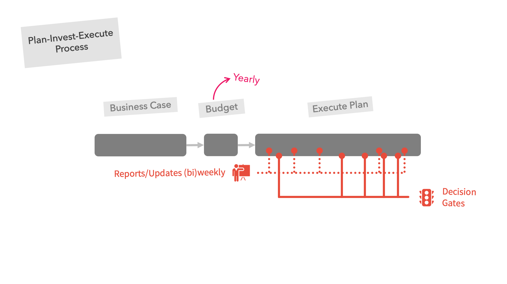
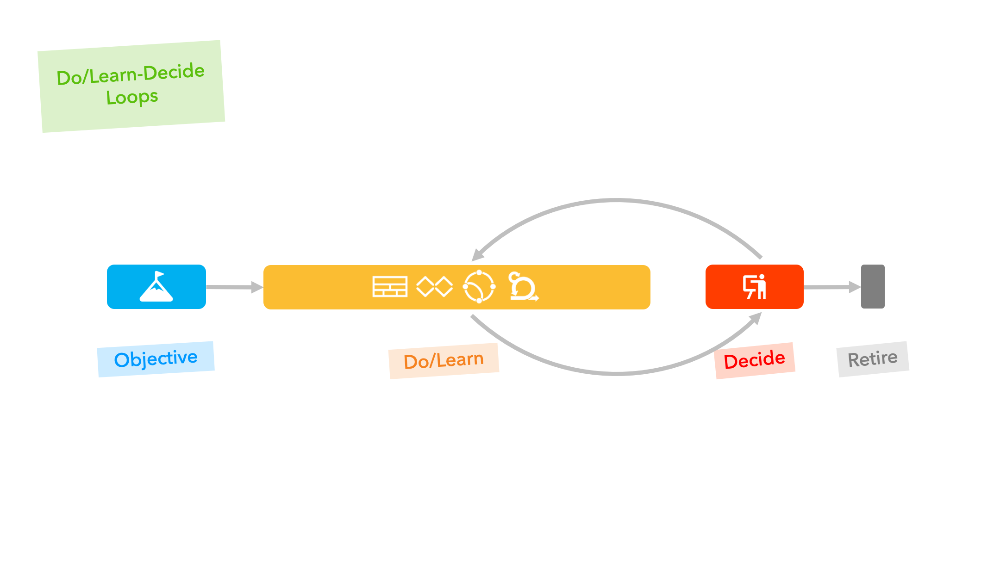
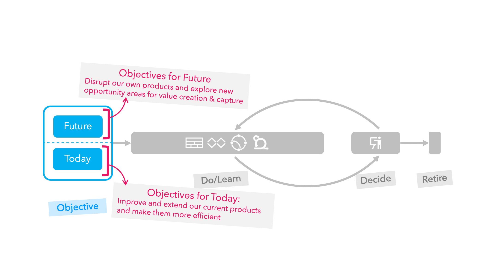
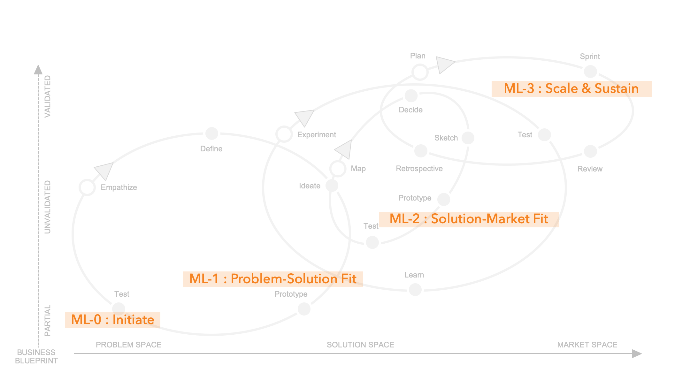
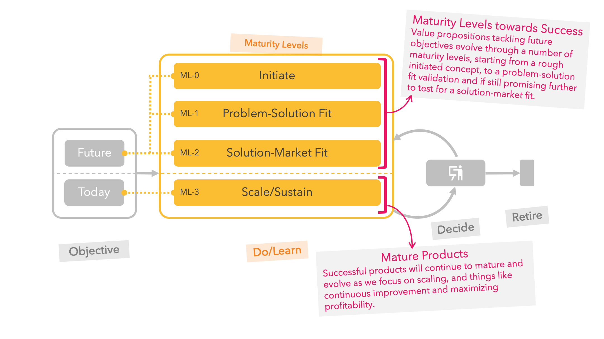
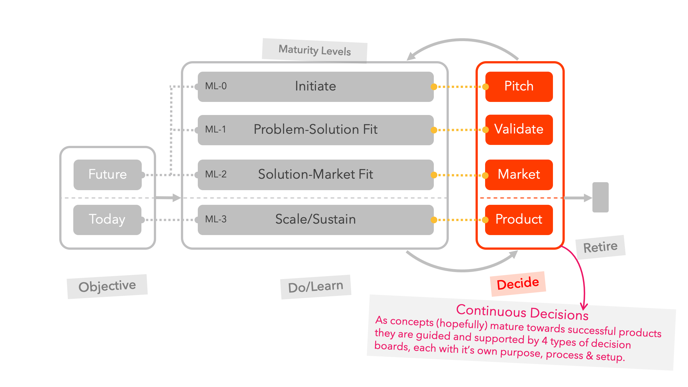

Nov 24 2019 > Originally posted on Medium
Lean Innovation Governance
The old plan-invest-execute process
Corporate investment decisions are often only made once per year by going through a list of business case documents. Once a decision has been made to support a business case, the team quickly shifts focus to blindly execute the plan. To mitigate the investment risk, the team is asked for very regular (weekly/bi-weekly) reports, (monthly) steering committee status updates meetings, combined with numerous progress plan related funding decision gates.

Figure 1: Plan-Invest-Execute
The likes of Steve Blank (The Four Steps to the Epiphany), Alex Osterwalder (Business Model Generation > Canvas), Eric Ries (The Lean Startup), Ash Maurya (Running Lean) … and many, many others … have since successfully highlighted that this process is littered with problems, with one of the biggest flaws being that it all starts with a “business case” based mainly on assumptions rather than reality (and the reality changes fast too).
The new do/learn-decide culture
Moving from a yearly plan-invest-execute world, to many do/learn-decide loops, requires more than just replacing the business case with some one-page canvas. The overarching governance process on why and how investment decisions are made must also evolve.
From a conceptual point of view this process has the following components:
- Everything we do must originate from a clear and transparent strategic Objective,
- and for each objective we may have a number of Do/Learn-Decide loops where we Do/Learn things to get qualitative and/or quantitative data, allowing us to Decide frequently what to prioritise next
- … or Retire a product

Figure 2: Do/Learn-Decide
Objective
Any mature organisation should have two distinct, clear and transparent strategic objectives (a bit like OKRs) that are reviewed on a regular (quarterly?) basis.
The authors of “Dual Transformation” did a good job in describing both sides, the first one with a clear focus on today’s business and the second with a firm eye on the future.
Today: On one side describing the objectives for today’s products. e.g. objectives to scale, attract more customers, objectives to improve a product and grow (or defend) our customer base, objectives to become more efficient and maximise our profitability …
Future: On the other side, define future strategic objectives to go after new opportunity areas as well as objectives to explore ways to disrupt our own products (before someone else does).

Figure 3: Do/Learn-Decide — Objectives
Do/Learn — Decide
There is no way to predict how fast a concept can grow into a launched product, but products still go through typical maturity levels. We believe there are 4 maturity levels, each with its own specific focus (and typical activities).

Figure 4: Innovation Spectrum — Maturity Level Focus
Do/Learn
The first 3 are the maturity levels (i.e. ML-0, ML-1 and ML-2) towards (hopefully) a new product. This is where the pirates have identified an opportunity area, from the treasure trove of our future objectives, to make the world a better place. These pirates can either come from inside the organisation (internal innovation) or from outside the company via open innovation-type incubator/accelerator programs or startup acquisitions.
The fourth maturity level (i.e. ML-3) is where the product is opened up to anyone so the future objective becomes an objective of a product of today, where the pirates transition into a well organised navy. Some pirates will remain on board to lead the growth hacking experiments during the scaling phase whilst others find a new challenge to sink their teeth in.

Figure 5: Do/Learn-Decide — Do/Learn
Decide
Each of the 4 maturity levels are steered by their own decision board, each with its own purpose, setup & metrics. Each team will continuously update and refine their Business Blueprint (more on this in later articles too) with qualitative and/or quantitative data from various experiments.
To avoid waste and make sure we focus the limited resources on the key strategic objectives, requests for support from any of the decision boards can never be longer than 3 months (A bit like the definition of “metered funding” from Eric Ries’s second book The Startup Way).

Figure 6: Do/Learn-Decide — Decide
Retire
Finally, each quarter based on the qualitative & quantitative learnings, alignment to objectives (today and future) and growth and revenue metrics, a possible decision outcome is to retire a product to release resources and focus on something else.